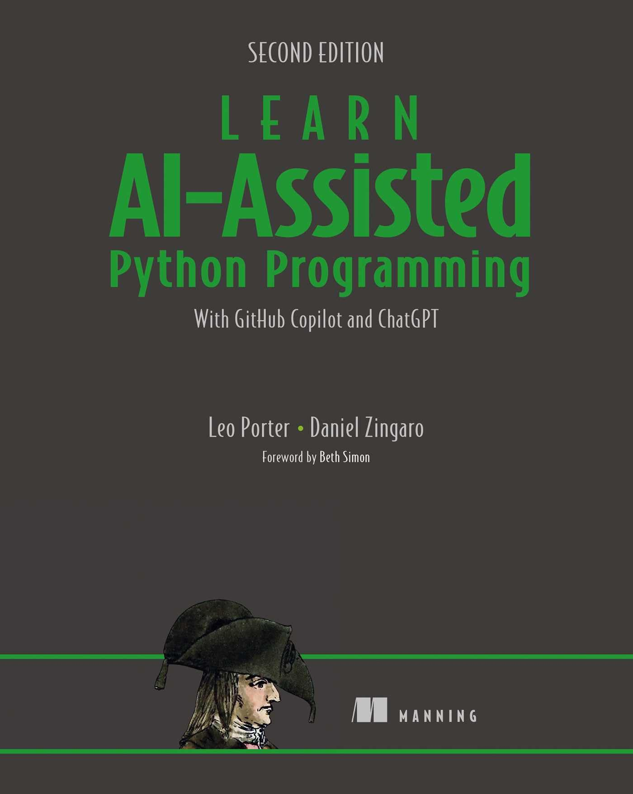
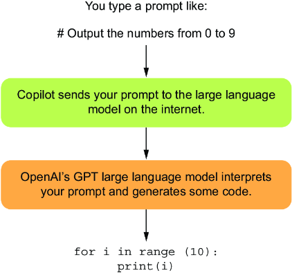

PASIA - Aula P.1
DAC - ICET - Universidade Federal de Lavras
12/08/2025
O conteúdo dessa aula é baseado nos capítulos 1 e 2 do livro abaixo.

Você conhece alguma indústria ou negócio cuja forma de trabalho não tem sofrido impacto do uso de softwares?
O resultado tem sido que cada vez mais pessoas querem aprender a programar
Apesar do desejo de aprender a programar
Nesta disciplina usaremos o GitHub Copilot como um assistente de IA.
O fato é que achar que assistentes de IA não deveriam ser usados hoje em dia
Os assistentes de IA possuem vantagens que são inegáveis
E, claro, muitas vezes assistentes de IA geram códigos corretos para problemas comuns
Isso não quer dizer que criar software agora é algo trivial e podemos confiar toda habilidade de programação para a IA.
Habilidades como:
Se tornaram mais importantes do que eram no passado.
Já habilidades como conhecer a semântica e sintaxe de uma biblioteca são agora menos importantes.
O que essa disciplina espera de você:
Esperamos que ao final da disciplina você consiga
Há um desafio ao utilizar assistentes de IA, que é especialmente relevante no caso de uma disciplina.
O resultado é que o que você fizer pode não bater exatamente com o que o professor preparou para a aula.
O que você acha que esse código faz?
section .text
global _start
_start:
mov ecx, 10
mov eax, '0'
l1:
mov [num], eax
mov eax, 4
mov ebx, 1
push ecx
mov ecx, num
mov edx, 1
int 0x80
mov eax, [num]
inc eax
pop ecx
loop l1
mov eax, 1
int 0x80
section .bss
num resb 1Ele faz com que o computador conte de 0 a 9 e imprima os números na tela.
O que você acha que esse código faz?
section .text
global _start
_start:
mov ecx, 10
mov eax, '0'
l1:
mov [num], eax
mov eax, 4
mov ebx, 1
push ecx
mov ecx, num
mov edx, 1
int 0x80
mov eax, [num]
inc eax
pop ecx
loop l1
mov eax, 1
int 0x80
section .bss
num resb 1Essa monstruosidade foi escrita em código Assembly.
Uma forma mais moderna de escrever o mesmo programa seria:
Mas infelizmente, o código está errado, ele não exibe os números de 0 a 9.
Com assitentes de IA, o trabalho ficou muito mais fácil.
Antes dos assistentes de IA, programadores profissionais costumavam trabalhar com duas telas.
Muitas vezes a solução encontrada na internet já era o que o programador estava tentando fazer.
Uma das coisas que os assistentes de IA fazem de melhor é automatizar esse processo.
Mas o que é exatamente um assistente de IA?
No caso do Copilot, uma das tarefas que ele faz é:
Copilot é apenas um exemplo de assistente desse tipo.
Mas como o Copilot funciona?
O “cérebro” por traz do Copilot é um programa de computador bacna que chamamos de LLM.
Imagine por exemplo que você pergunte qual a próxima palavra deveria ver na frase:
Há várias palavras que fariam sentido nesse contexto, como “porta”, “caixa” ou “sessão”.
Um LLM leva em conta o contexto para completar a próxima palavra e vai fazendo isso, palavra a palavra, até chegar na resposta final.
Isso é importante pois significa que o Copilot pode gerar códigos diferentes cada vez que você pede que ele seja gerado.
Repare que em nenhum momento dissemos que o Copilot “entende” o que ele está fazendo.
Assim, durante nossa jornada na disciplina,
Funcionamento do Copilot:

Não seria mais prático se o Copilot gerasse código de máquina diretamente?
A questão é que o Copilot cometerá erros
O vídeo abaixo é bem interessante e explica de forma simples como funcionam os modelos LLM.
Fica a dica:
Programadores, especialmente iniciantes, gastam muito tempo aprendendo a escrever código sintaticamente correto.
Assistentes como o Copilot podem ajudar muito nesse aspecto.
Com isso, conseguimos criar softwares mais complexos em menos tempo e com menos frustrações.
Não ter que se preocupar com detalhes de sintaxe pode ser um grande fator de aumento de produtividade.
O Copilot, assim como outros assistentes de IA, também pode:
Explicar códigos que já existem
Tornar código mais fácil de entender
O Copilot, assim como outros assistentes de IA, também pode:
Encontrar e corrigir bugs
Explicar erros
O Copilot, assim como outros assistentes de IA, também pode:
Encontrar bibliotecas que podem ser úteis
Melhorar o desempenho do código
Uma dica geral para utilizar assistentes de IA é:
Você pode, por exemplo:
Além de falar das vantagens, é importante também falar dos riscos e desafios ao usar assistentes de IA.
Copyright
Educação
Qualidade do código
Segurança do código
Assistentes de IA não são especialistas (experts)
Viés
Se o Copliot pode gerar código para nós, explicá-lo e corrigi-lo, não temos que fazer nada, certo?
Além disso, não podemos passar uma tarefa gigantesca para o Copilot e esperar que ele resolva tudo.
Uma tarefa que já existia e agora é ainda mais fundamental é: testes de software.
Outra habilidade essencial é depuração de código.
Por fim, há uma habilidade totalmente nova quando usamos assistentes de IA: engenharia de prompt.
TODO